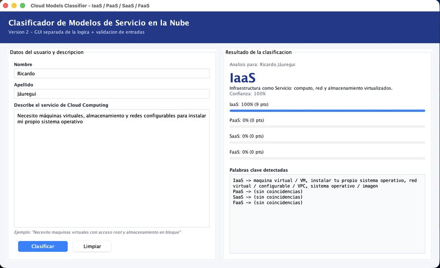
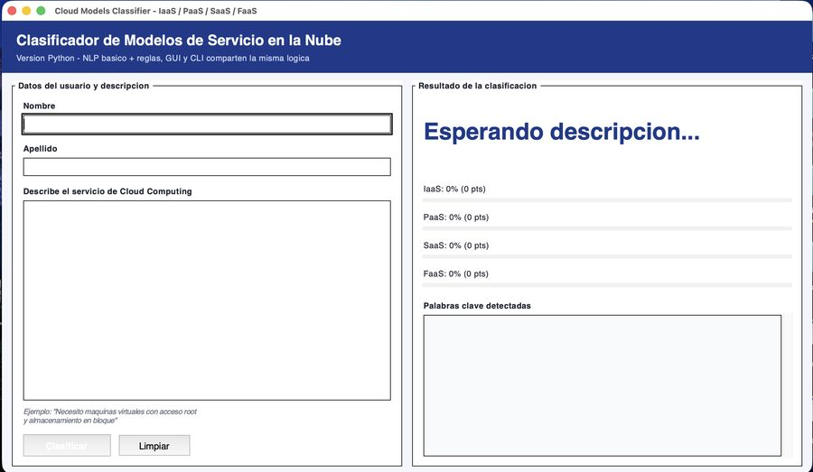
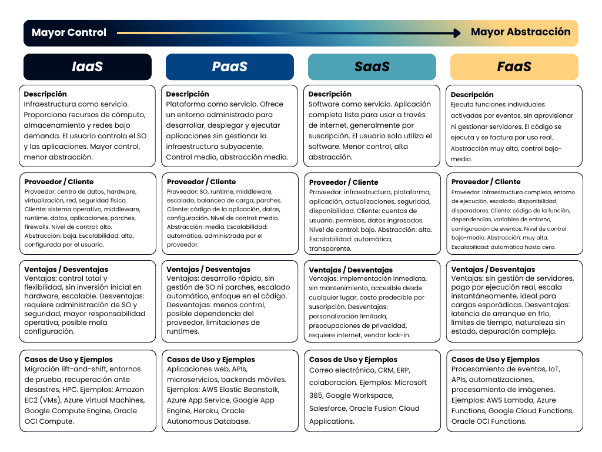
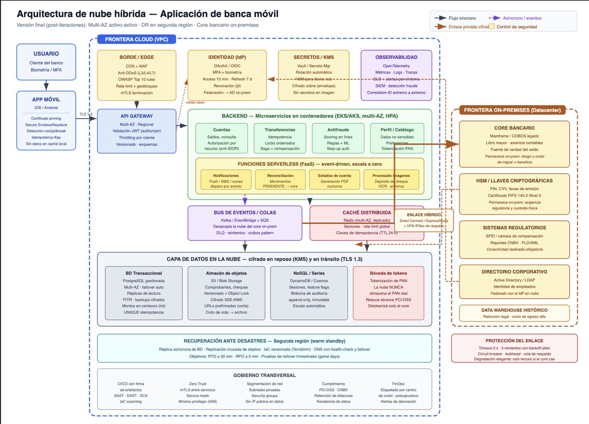

Integración de Aplicaciones Computacionales · UDEM 2026
Portafolio de
entregas del semestre
Cada entrega es un reporte completo: el desarrollo escrito, las evidencias en imagen, los documentos incrustados y el código fuente que se puede leer aquí mismo, copiar o descargar archivo por archivo.
6
Entregas publicadas
75
Archivos de código
52
Imágenes de evidencia
106
Pruebas automatizadas
Ejercicios guiados

Ejercicio guiado 1
Clasificador de modelos de servicios Cloud
Java · Swing · CLI · Regex · NLP
Aplicación de escritorio en Java que clasifica una descripción en lenguaje natural como IaaS, PaaS, SaaS o FaaS. GUI y CLI comparten el mismo motor.

Ejercicio guiado 2
Librería en línea — Monolito Node.js + PostgreSQL
Node.js · Express · EJS · PostgreSQL · Nginx
Aplicación monolítica con normalización 4FN, procedimientos almacenados, autenticación por roles, una vulnerabilidad de seguridad real detectada y corregida, 23 pruebas ejecutadas y despliegue con reverse proxy.
Tareas

Tarea 1
Clasificador Cloud en Python
Python · Tkinter · argparse · NLP
Reimplementación en Python del clasificador de Java, con separación por capas, pipeline de NLP de seis pasos y 31 pruebas automatizadas.

Tarea 2
Mapa conceptual comparativo de modelos Cloud
IaaS · PaaS · SaaS · FaaS
Mapa que compara los cuatro modelos de servicio en diez dimensiones, desde el nivel de control hasta los ejemplos reales de cada proveedor.
Tarea 3
¿Cloud-Native o Cloud-Enabled?
Miniensayo · Caso Netflix
Análisis técnico de la arquitectura de Netflix para determinar si su migración a AWS la convierte en cloud-native o solo en cloud-enabled.

Tarea 4
Arquitectura Cloud híbrida para banca móvil
Prompt Engineering · FastAPI · 43 pruebas
Diseño asistido por IA en seis iteraciones, con 15 vulnerabilidades catalogadas, corregidas y demostradas con código ejecutable.